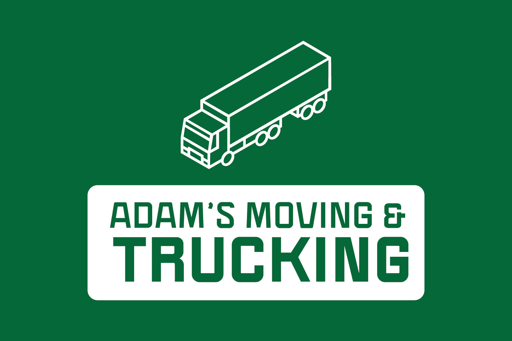
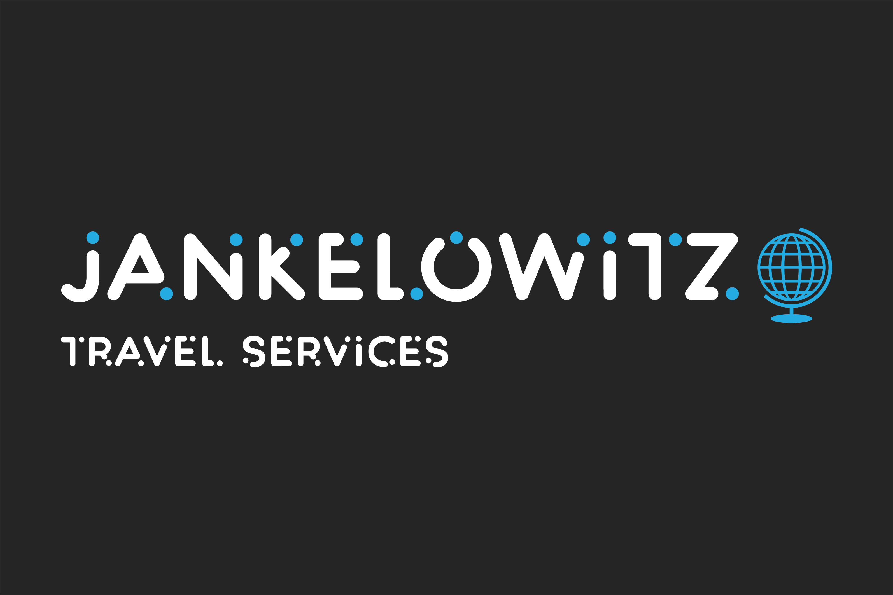
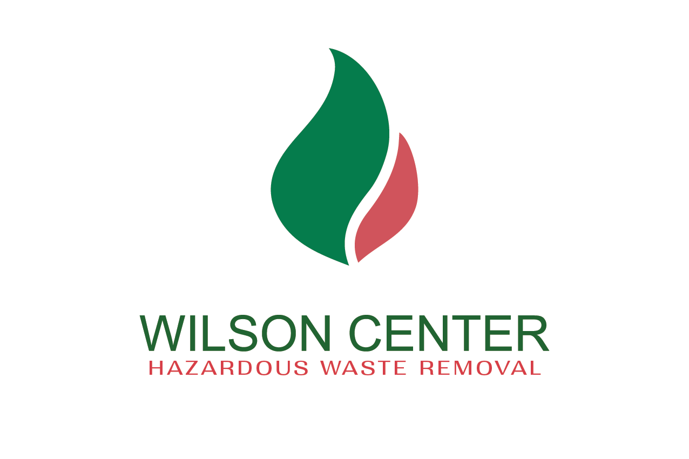

Moving & trucking
Adam’s Moving & Trucking
Moving, trucking, and general transportation support for goods that need to be somewhere else.
Core group
A logistics and mobility platform coordinating travel, transportation, delivery, moving, and selectively hazardous operational requirements.

Platform mandate
Jankelowitz Logistics Corp. provides the Group’s operational backbone for travel advisory, moving, trucking, delivery, and specialized logistics coordination.

End-to-end travel planning, itinerary architecture, and logistics coordination.
View profile →
Moving, trucking, and general transportation support for goods that need to be somewhere else.

Hazardous waste removal and environmental services with a surprisingly tasteful logo.
Transportation portfolio
Moving and trucking services for planned relocations and improvised operations.
Premium delivery experience with variable interpretation of “premium.”
Featured subsidiary
Jankelowitz Travel Services brings the Jankelowitz Logistics Corp. operating model to travel planning, delivering proposed itineraries, decision support, and best-efforts execution for trips of strategic importance.
Open Jankelowitz Travel Services profile